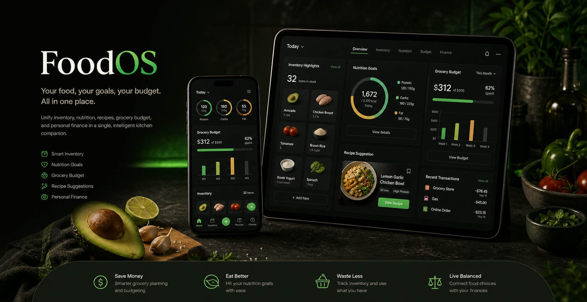

Menos desperdicio
Detecta caducidades por ubicacion: nevera, congelador, despensa o almacenes personalizados.

Inventario · Nutricion · Finanzas
La app que conecta lo que tienes en casa, lo que necesitas comer y lo que puedes gastar.
Problema central
Detecta caducidades por ubicacion: nevera, congelador, despensa o almacenes personalizados.
Recomienda comidas que usan lo que caduca, cubren macros y respetan presupuesto semanal.
El gasto de alimentacion se cruza con tickets, CSV, banco PSD2 y compras completadas.
Producto
Entrada manual, escaneo de codigo de barras y foto con IA. Caducidades calculadas por ubicacion.
Semaforo de ingredientes, escalado por personas o calorias y coste por racion.
Listas por tienda, fusion de ingredientes repetidos y gasto automatico al completar compra.
Videos cortos, guardado, filtros y subida directa a Cloudinary con thumbnails automaticos.
Ingresos, categorias, importacion de tickets y presupuesto con modo ahorro maximo.
Mifflin-St Jeor, objetivos corporales, ciclado calorico y optimizador proteina/euro.
Cuatro modos: exacta, parcial, por categoria y generacion IA bajo demanda.
Integracion en accion
Cena sugerida
Usa la pechuga que caduca manana, cubre 50 g de proteina pendiente y cuesta 2,80 EUR.
Flujo diario
Manual, barcode o foto IA. Se guardan macros, cantidad y caducidad estimada.
La app calcula TMB, TDEE, macros y dias de gym o descanso.
Busca recetas por ingredientes o pide una receta IA si hace falta.
El carrito actualiza inventario y finanzas sin duplicar trabajo.
Stack gratuito
SSR, SSG, PWA y API routes serverless.
iOS y Android con camara, barcode y push.
Auth, RLS, realtime, storage y Edge Functions.
Principal gratis. BYOK para OpenAI, Claude u Ollama.
Video feed, thumbnails y streaming adaptativo.
Conexion bancaria europea para saldos y transacciones.
Personalidad
Zana - Energetica y motivadora
Rutas previstas
La version web demo ya funciona. Los enlaces de stores, PWA y Windows se activaran cuando existan las builds (ver pendientes manuales).
QR conceptual — apuntara a las stores cuando la app este publicada.
Iniciar sesion
El login usara Supabase Auth con Google OAuth y enlace magico por email. Esta pantalla ya esta maquetada: solo falta conectar el proyecto de Supabase.
Lo que queda manual
Crear/configurar Supabase, Vercel, Cloudinary, Firebase FCM, Google AI Studio/Gemini y Nordigen/GoCardless.
Google Play requiere pago unico de 25 USD. Apple Developer requiere 99 USD al ano.
Generar mascotas definitivas en PNG/Lottie, video de hero para scrubbing y capturas reales de la app cuando exista.
Confirmar si la landing sera solo presentacion, waitlist, login real o puerta de descarga desde el dia uno.